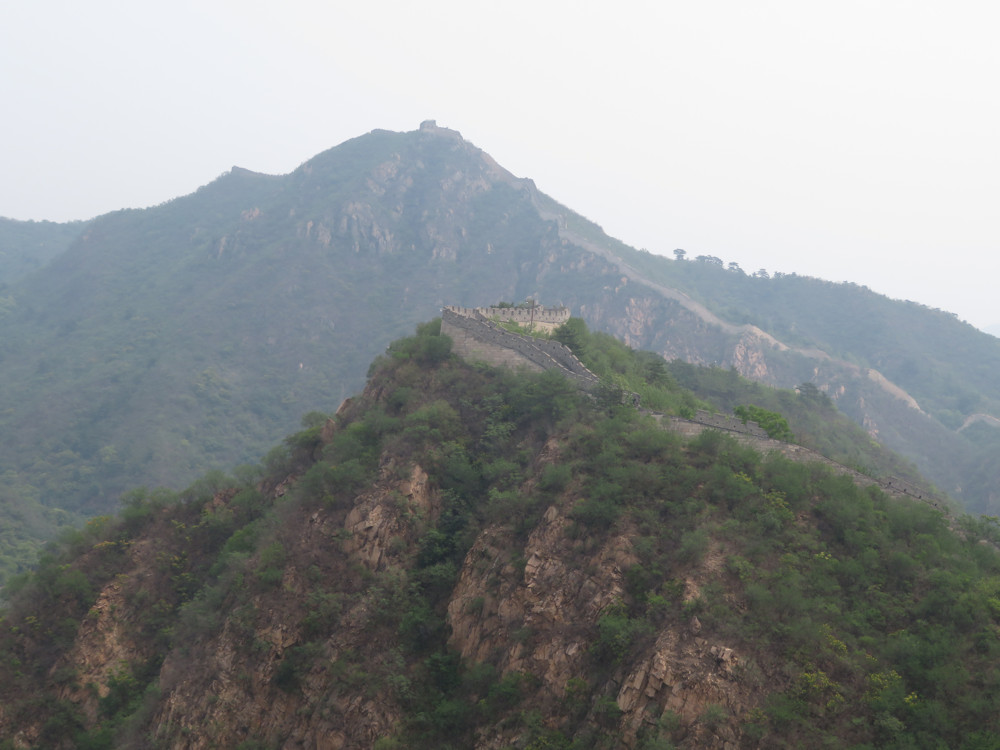
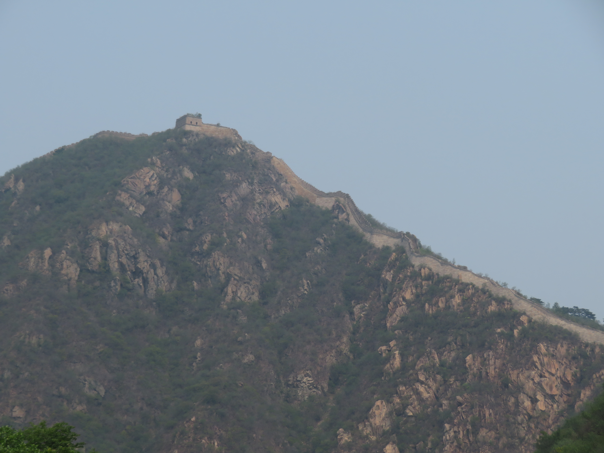

The Great Wall of China is one of the most iconic attractions in the entire country. It is one of the 7 wonders of the world and certainly deserving of that title, featuring thousands of miles of stone walls used by historic Chinese dynasties to defend against invaders. While there are many different ruins of the Great wall still standing today, the most famous of which from the Ming Dynasty are found just outside of Beijing and are argubly the city's greatest attraction and a must-visit if you're ever in China.
The Lakeside Great Wall at Huanghuacheng north of Beijing is one of the most interesting sections of Great Wall of China. The wall is built overlooking this large resevoir, giving you beautiful views of both the other parts of the wall as well as the lake below. After trekking on the wall and admiring the views, you could rent a electric boat and ride it around the lake, giving some amazing scenery of the various sections of the Lakeside Great wall you just hiked on. Overall, I believe this section of the Great Wall of China to be the coolest I've been to and extremely underrated in my opinion.